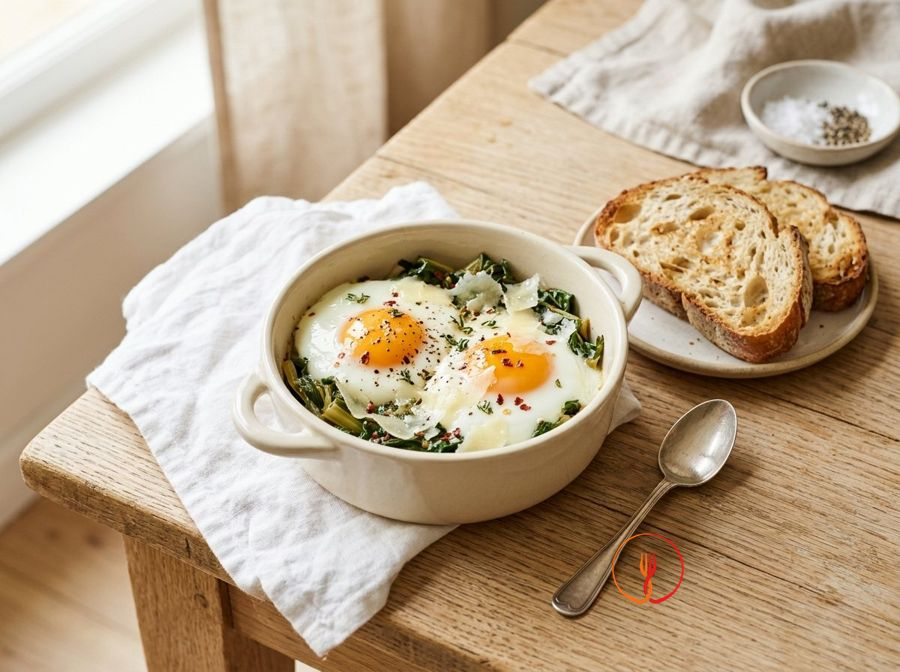

Uova al pomodoro e basilico
Una versione nutriente e bilanciata della classica 'uova in purgatorio', pilastro della cucina povera mediterranea. Questa ricetta utilizza grassi buoni e aromi freschi per trasformare ingredienti semplici da supermercato in un secondo piatto proteico d'eccellenza.
Ingredienti
- Uova medie fresche8 pz
- Passata di pomodoro rustica800 g
- Olio extravergine d'oliva30 ml
- Cipolla ramata100 g
- Aglio2 spicchi
- Basilico fresco20 g
- Sale iodato5 g
- Pepe nero macinato2 g
Allergeni
Uova
Procedimento
- Tritare finemente la cipolla e schiacciare leggermente gli spicchi d'aglio vestiti per facilitare il rilascio degli oli essenziali durante la cottura.
- In una padella antiaderente ampia (30-32 cm), scaldare l'olio extravergine d'oliva a fuoco dolce e aggiungere la cipolla e l'aglio, lasciandoli appassire per 5-6 minuti finché la cipolla non diventa traslucida.
- Versare la passata di pomodoro nella padella, salare, pepare e mescolare bene; coprire parzialmente e lasciar cuocere a fiamma medio-bassa per circa 15 minuti affinché il sugo si restringa e perda l'acidità iniziale.
- Rimuovere gli spicchi d'aglio dal sugo ormai saporito e aggiungere metà delle foglie di basilico, spezzettandole a mano per evitare l'ossidazione dei bordi.
- Con il dorso di un cucchiaio, creare 8 piccoli incavi nella salsa di pomodoro ben distanziati tra loro, che serviranno ad accogliere le uova.
- Rompere ogni uovo singolarmente in una tazzina e farlo scivolare con delicatezza in ciascun incavo, assicurandosi che il tuorlo rimanga integro al centro della 'conca'.
- Coprire immediatamente la padella con un coperchio trasparente e cuocere per circa 3-5 minuti: il segnale di cottura pronta è l'albume completamente bianco e rappreso mentre il tuorlo deve apparire ancora lucido e restare morbido.
- Spegnere il fuoco, guarnire con le restanti foglie di basilico fresco e un ultimo giro d'olio a crudo, lasciando riposare coperto per 1 minuto prima di impiattare con cura ogni uovo con la sua porzione di sugo.
Valori nutrizionali (stima)
| Per porzione (349 g) | Per 100 g | |
|---|---|---|
| Energia | 1025 kJ / 245.0 kcal | 293.7 kJ / 70.2 kcal |
| Proteine | 14.0 g | 4.0 g |
| Carboidrati | 10.0 g | 2.9 g |
| di cui zuccheri | – g | – g |
| Grassi | 16.0 g | 4.6 g |
| di cui saturi | – g | – g |
| Fibre | – g | – g |
| Sale | – g | – g |
Valori stimati con l'AI su dati medi CREA / USDA: sono indicativi e non sostituiscono il parere di un medico o di un nutrizionista.
Apri la ricetta nell'app per la lista della spesa, le schede ingredienti e i negozi vicini.
Ricette correlate
 30 minUova alla Flamenca Semplificate💰 Salva Euro · circa 1,49 € a persona
30 minUova alla Flamenca Semplificate💰 Salva Euro · circa 1,49 € a persona
35 minUova in Cocotte con Bietole e Parmigiano💰 Salva Euro · circa 0,86 € a persona 10 minUova strapazzate alla ricotta e erbette finiAdatto ai bambini💰 Salva Euro · circa 0,32 € a persona
10 minUova strapazzate alla ricotta e erbette finiAdatto ai bambini💰 Salva Euro · circa 0,32 € a persona 22 minSpaghetti con Uovo Poché Veloce e Mollica Tostata💰 Salva Euro · circa 0,57 € a persona
22 minSpaghetti con Uovo Poché Veloce e Mollica Tostata💰 Salva Euro · circa 0,57 € a persona